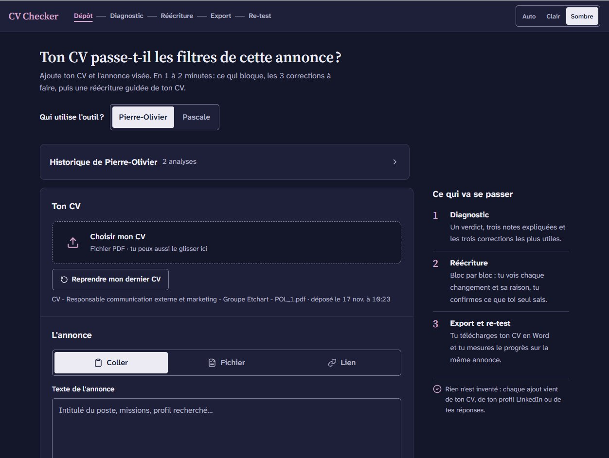

Générateur de candidature : lettre, mails et profil en 20 secondes
Une lettre de motivation structurée, un mail d'accompagnement et un profil CV optimisé pour les logiciels de recrutement (ATS), générés en 20 secondes à partir d'une annonce et d'un profil.
L'essentiel
Une lettre de motivation prend 2 à 3 heures, et finit souvent par ressembler à toutes les autres.

Ce que fait l'IA
- Rédige la lettre, deux versions de mail et un profil adapté aux logiciels de recrutement
- Travaille en 4 passes : rédaction, correction, mail, analyse
- Contrôle la qualité : mots interdits, tirets, score sur 10
Ce qui reste humain
- Les règles d'écriture données à l'IA
- Que tout reste sur l'ordinateur du candidat
- Le candidat relit, ajuste et choisit ce qu'il envoie
Ce que ça change
- 20 minutes de relecture au lieu de 2 à 3 heures
- Aucun chiffre inventé : seuls ceux du profil
- Rien à installer : un seul fichier HTML
Le détail, à ouvrir selon ce qui vous intéresse :
Pourquoi ce projet
Le problème
La plupart des candidats passent 2 à 3 heures sur une lettre qui finit par ressembler à toutes les autres : formules convenues, structure prévisible, ton générique. Ce qui manque, c'est une méthode et du temps.
Le but est de lui rendre ce temps pour le reste de sa recherche : choisir les bonnes offres, préparer les entretiens, construire son réseau.
Comment ça marche
Les règles données à l'IA
Exemple de lettre
Madame, Monsieur,
La Fédération Française des Énergies Renouvelables porte depuis plus de trente ans la voix d'un secteur en pleine transformation, un rôle de représentation qui exige autant de rigueur institutionnelle que de capacité à rendre lisible des enjeux techniques complexes pour des publics très divers.
Directeur Marketing & Communication chez EVOLEN pendant un an, j'ai piloté la communication d'une fédération sectorielle dans l'énergie : refonte de la stratégie LinkedIn (+30% d'engagement), production de la revue de presse quotidienne pour 400 décideurs, coordination des prises de parole à destination des institutions. Ce poste m'a appris à tenir les deux exigences à la fois : la précision du fond et l'efficacité de la forme.
Mes vingt-deux ans à la FIEV, dont dix en tant que responsable communication, m'ont donné une maîtrise des environnements fédératifs que je ne trouverais pas ailleurs : gestion des adhérents, reporting au Directeur Général, transformation digitale d'une organisation de 500 000 € de budget. J'ai quitté la FIEV après avoir accompagné sa mutation numérique. Je cherche aujourd'hui à mettre cette expérience au service d'un secteur dont les combats m'importent.
Disponible immédiatement, je serais heureux d'échanger sur la façon dont mon parcours peut répondre à vos enjeux de communication et d'influence.
Cordialement,
Pierre-Olivier Lemoine
Choix techniques
| Décision | Raison |
|---|---|
| Fichier HTML unique | Rien à déployer, se partage par e-mail ou par lien |
| JavaScript vanilla | Aucune dépendance, pas de build, lisible et maintenable |
| localStorage | Profil 100 % côté client : aucune donnée transmise à un serveur tiers |
| API Anthropic directe | Contrôle total du prompt, pas d'intermédiaire |
| claude-sonnet-4 | Meilleur rapport qualité / coût pour ce type de génération |
| 4 passes en série + parallèle | Correction automatique + mail + ATS sans attente supplémentaire |